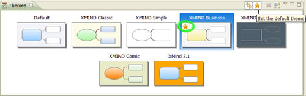

在XMind中，风格涵盖了我们对一个思维图的各种属性的设置，例如图的背景图片、背景颜色、线条的形状/颜色、主题的字体/颜色等等。XMind本身提供了6种设计精良的风格，其中一个是作为缺省的风格使用的。 现在我们可以很轻松的设置其他的风格作为XMind的缺省风格。选中一个风格，点击视图工具栏上的 “设置缺省风格”的按钮即可。

如果您使用的是XMind专业版，您还可以根据自己喜好设计属于您自己的风格，并将其设置为缺省的风格。
- 打开一个思维图，将图、主题、外框、线条等等的属性全部修改为自己喜爱的；
- 点击菜单的“工具 > 提取风格” 从而提取您设计的风格；
- 在风格视图中，选中这个风格，并命名；
- 点击视图工具栏上的星状按钮，将此风格设置为缺省风格。
现在，您的XMind专业版拥有了独一无二的风格。
您可能还对下列内容感兴趣：